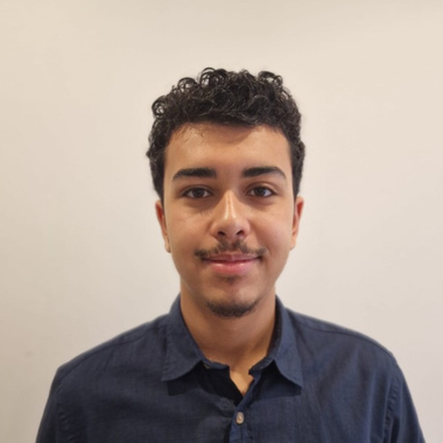

Daabak Ilyes
Étudiant en BUT Informatique — parcours AGED
Administration, Gestion et Exploitation des Données. En alternance au Service Technique Ferroviaire de la RATP, où je conçois des outils numériques utilisés par de vraies équipes terrain.

Qui je suis
Je m'appelle Ilyes, étudiant en troisième année de BUT Informatique à l'IUT Créteil-Vitry, parcours AGED (Administration, Gestion et Exploitation des Données). Ce qui m'intéresse en informatique, c'est quand ça touche au concret : un formulaire que des agents utilisent vraiment sur le terrain, une base de données qui doit tenir la route, un tableau de bord qui rend une situation lisible d'un coup d'œil.
En alternance au sein du Service Technique Ferroviaire de la RATP, je développe des solutions numériques internes (SharePoint, Power Apps) pensées pour des besoins métiers réels, pas pour la démonstration. C'est cette utilité directe qui me motive le plus dans ce métier.